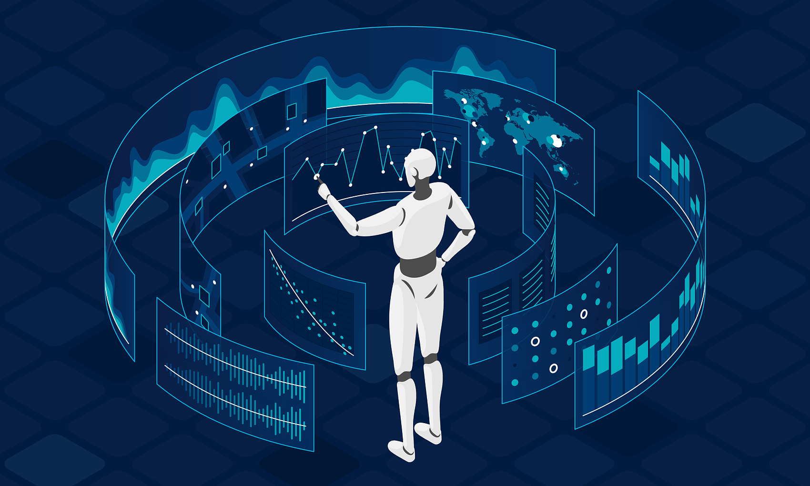
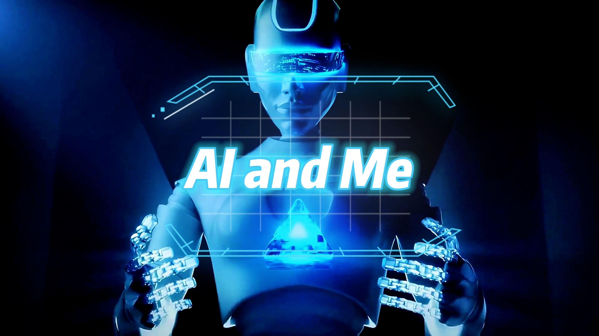
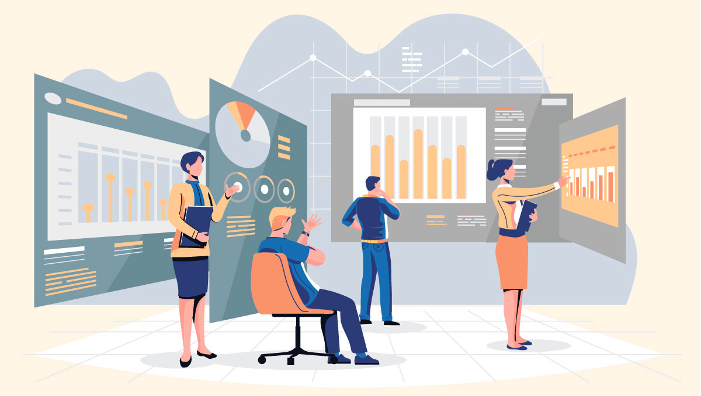

VERA V4 · 金融 AI 的三重困境
证券行业 AI 应用的三重困境
信息爆炸 / AI 难证明 / 决策须追责

AI 难证明
风险（RISK）
虚假数据导致决策失误
数据来源无法追溯
缺少审计证据链

信息爆炸
时间（TIME）
海量研报、公告、新闻与数据源
市场机会转瞬即逝
人力无法规模化

决策须追责
成本（COST）
专业数据采购成本高
人工尽调周期长
同样问题反复查
需要 AI 效率，
但不敢用 AI 决策